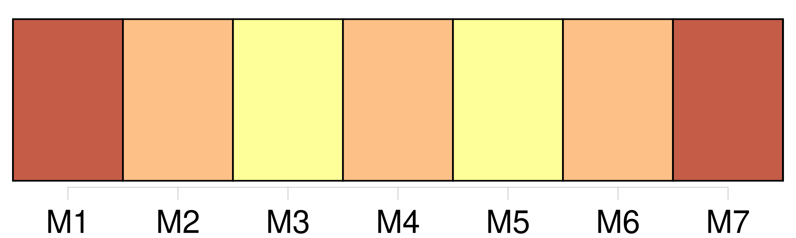
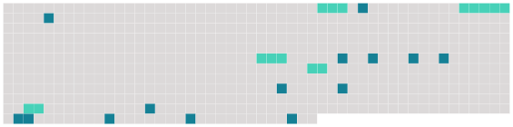

Longueur nb maillons : 19 mentions |
  |
Alors, perdant la tête, pour ne plus la contempler, je me tournai vers la fenêtre, et j'aperçus un valet emmenant par la bride vers l'écurie [son grand cheval] , [qui] se cabrait. Elle aussi suivait de l'oeil [l'animal ardent et bondissant]
Puis, quand [il] eut disparu, elle s'endormit tout à coup. [10 phrases]
[L'animal furieux] ruait vers moi ; elle [le] flattait sur [son] cou recourbé, [l'] embrassait sur [ses] naseaux frémissants sans essuyer ensuite ses lèvres ; et le parfum de son corps, en sueur comme après la tiédeur du lit, se mêlait sous ma narine à l'odeur âcre et fauve de [la bête] [4 phrases] J'avais l'oreille contre le sol ; j'entendis [son] galop lointain ; puis je [l'] aperçus là-bas, sous les feuilles comme au bout d'une voûte, arrivant à fond de train. [3 phrases]
[L'animal] heurta mon piège des deux jambes de devant, et [roula] , les os cassés. [3 phrases] Puis, quand je l'eus déposée à terre, je m'approchai de [Lui] [qui] nous regardait ; alors, pendant qu' [il] essayait de me mordre encore, je [lui] mis un pistolet dans l'oreille... et je [le] tuai... |
 |
La ressource peut être téléchargée sur la page Ortolang
Si vous avez des questions ou vous voyez des erreurs, merci d'envoyer un mail à silvia.federzoni89@gmail.com
Site développé par S. Federzoni (contact)